川渝文化亮相墨尔本联邦广场｜中澳政界及社区嘉宾到访展位交流
2026年9月19日，Chinese Traditional Cultural Festival 2026（2026中国传统文化节）在墨尔本联邦广场举行。本次活动由 GAPPER AUS、澳洲中国舞蹈协会（ACDA）及 Macro Vision 联合主办，由 Melbourne City MG｜IM 呈现，并获得维多利亚州政府、墨尔本市政府及联邦广场等合作伙伴支持。作为面向公众开放的大型社区文化活动，本届文化节设置传统舞蹈、民族音乐、戏曲、中华服饰、非物质文化遗产展示、社区市集及互动体验等多元内容，并将传统文化表达与当代舞台艺术相结合。来自政府、议会、文化机构、社区组织及不同文化背景的嘉宾和公众共同参与，在墨尔本核心公共文化空间形成了一场具有广泛参与度和多元文化意义的城市文化交流活动。
联邦广场位于墨尔本中央商务区核心区域，是当地最具代表性的城市文化地标和公共活动空间之一。文化节在此举办，不仅提升了中国传统文化在澳大利亚主流公共空间中的可见度，也为不同文化背景的公众认识、理解并参与中国文化提供了开放窗口，进一步促进华人社区与墨尔本多元社会之间的交流与连接。
本次活动的顺利举行，凝聚了三家主办机构在整体策划、节目统筹、嘉宾联络、场地协调、公众活动及现场执行等方面的共同投入。GAPPER AUS发挥其在大型活动策划与执行、人才及社区资源整合方面的经验；澳洲中国舞蹈协会依托长期推动中国民族舞蹈及中华文化传播的专业积累，为舞台内容与文化呈现提供支持；Macro Vision则结合其在媒体、品牌、公关、活动及多领域平台运营方面的资源，参与活动传播与整体执行。三方协同，将中国传统文化的专业展示、公众参与和城市传播有机结合，共同推动本届文化节在墨尔本落地。
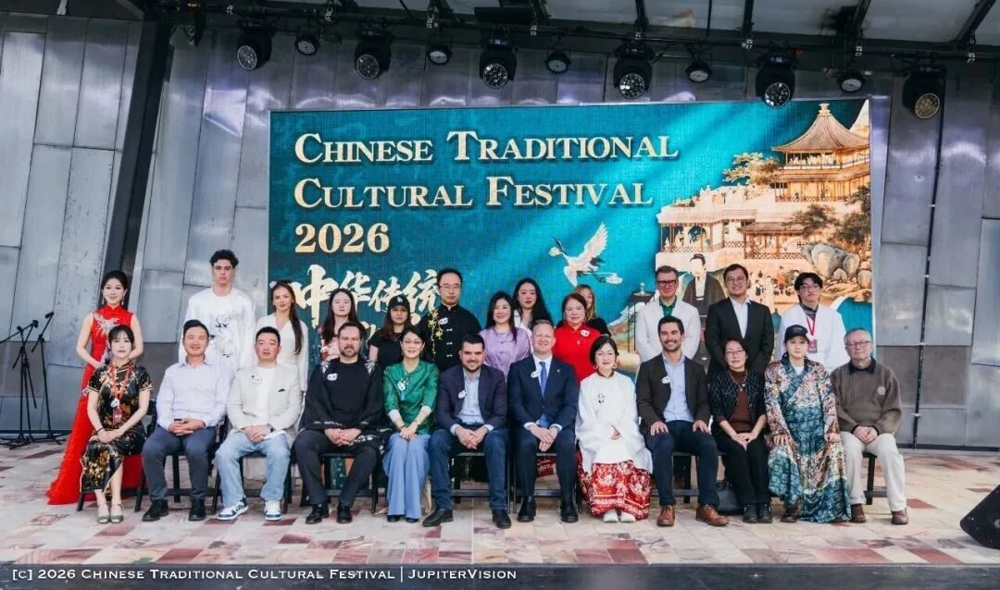
黄欣悦会长与维多利亚州多元文化事务部长 Paul Edbrooke MP、中国驻墨尔本副总领事刘东源、联邦众议员 Gabriel Ng MP、墨尔本市议员 Gladys Liu、Rafael Camillo及维多利亚州议员 John Mullahy MP 等嘉宾合影
维多利亚州多元文化事务部长Paul Edbrooke MP、中国驻墨尔本副总领事刘东源、澳大利亚联邦众议员及Menzies选区议员Gabriel Ng MP、墨尔本市议员Gladys Liu、Rafael Camillo维多利亚州议员John Mullahy MP等政府、议会及社区嘉宾参与开幕式及相关活动。
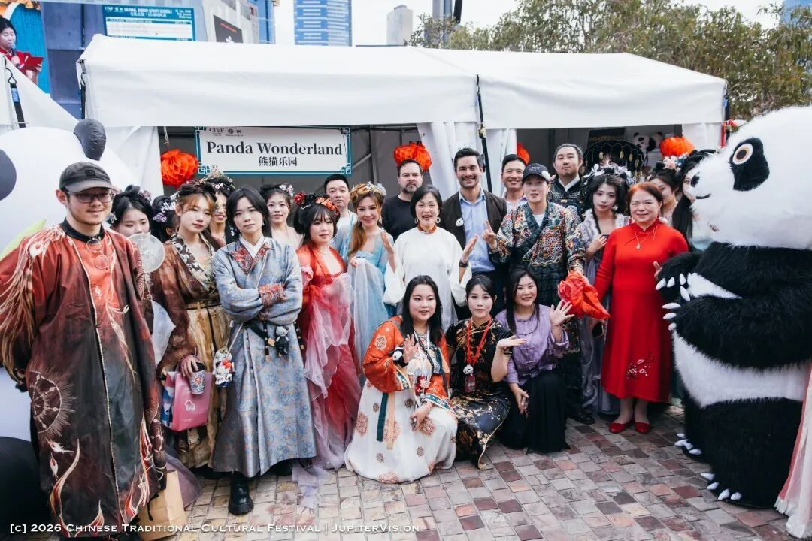
活动期间，多位政府及议会嘉宾来到川渝文化主题展位参观交流，并与HYSTON团队、澳洲重庆市文化体育教育旅游协会代表、青年参与者及传统服饰表演者合影留念。
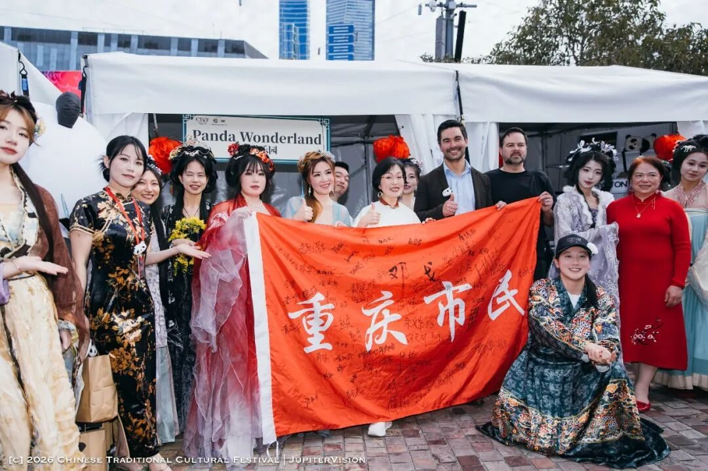
黄欣悦会长与Menzies选区议员Gabriel Ng MP、墨尔本市议员Gladys Liu、Rafael Camillo合影
川渝文化在墨尔本市中心被看见
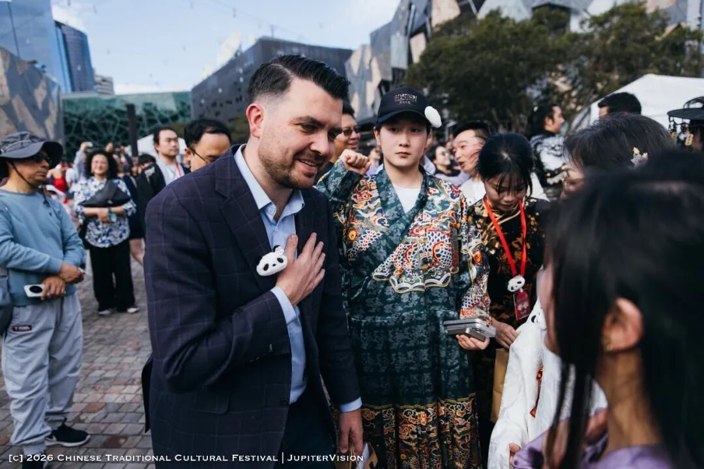
维多利亚州议员John Mullahy MP、澳洲重庆市文化体育教育旅游协会会长黄欣悦
活动期间，由澳洲重庆市文化体育教育旅游协会、澳洲川渝文化教育体育协会与HYSTON团队共同呈现的川渝文化主题展位亮相联邦广场。
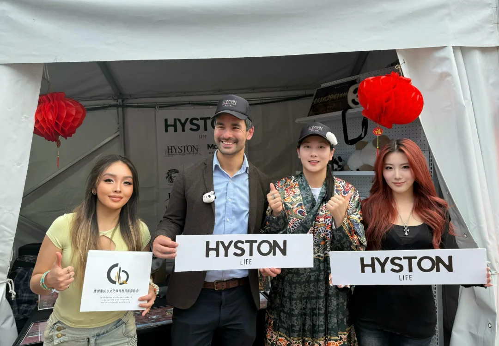
HYSTON团队陆钰灵、曹玉媛与澳大利亚联邦众议员及Menzies选区议员Gabriel Ng MP
展位以重庆及川渝地区的城市文化为叙事起点，将熊猫意象、巴渝文化元素、传统服饰、重庆城市影像、青年创意内容及中澳文化交流项目融入现场展示。

传统服饰表演者与来自不同文化背景的观众共同参与其中；展位同时展示了《重庆市民》城市音乐Live Film、重庆直辖二十九周年庆祝活动及HYSTON近年来推动的中澳文化交流项目，让公众看见一个既保留地域记忆、又持续发生当代表达的重庆。
这里展示的不只是传统符号。
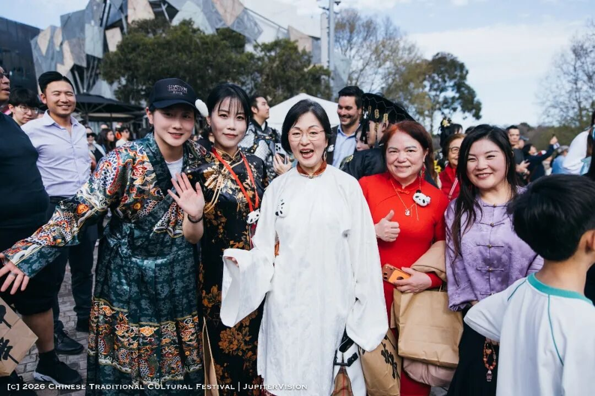
从城市影像、音乐现场到青年创意，从重庆的山城记忆到墨尔本的公共空间，HYSTON团队尝试用更当代、更具参与感的方式，让川渝文化不只是被观看，也能被理解、被讨论，并成为新的连接起点。
活动当天，不少本地观众在展位驻足拍照，了解重庆城市文化、川渝饮食与生活方式，并与团队交流未来前往重庆及中国西南地区旅行、学习和开展合作的可能。
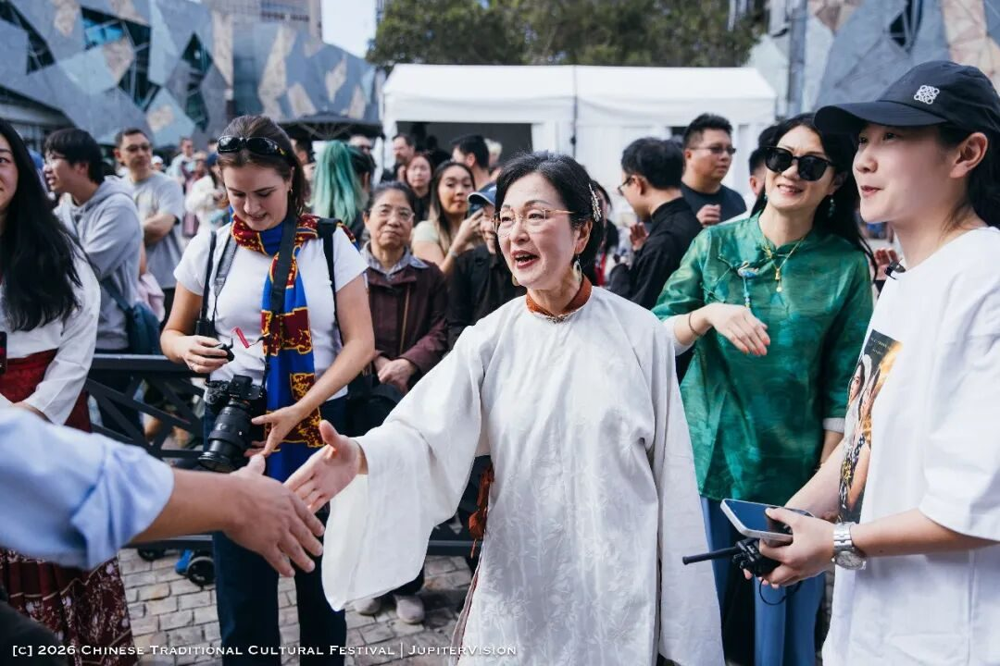
中国驻墨尔本副总领事刘东源、墨尔本市议员Gladys Liu
HYSTON团队与多位政界及城市嘉宾现场交流
团队向嘉宾介绍了澳洲重庆市文化体育教育旅游协会与HYSTON目前在中澳两地推动的文化、体育、教育、旅游及青年交流工作，包括重庆城市文化传播、中澳体育资源合作、青年创意项目、女性公益行动以及中国企业进入澳大利亚市场的本地连接。
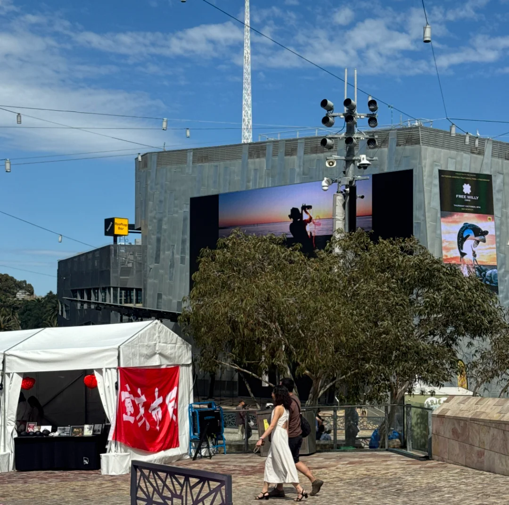
墨尔本市议员Rafael Camillo在交流中了解了川渝展位的现场展示及团队近期项目。HYSTON团队也介绍了以墨尔本和重庆为主要落点，通过影像、活动及公共文化项目连接两地青年和社区的工作方向。
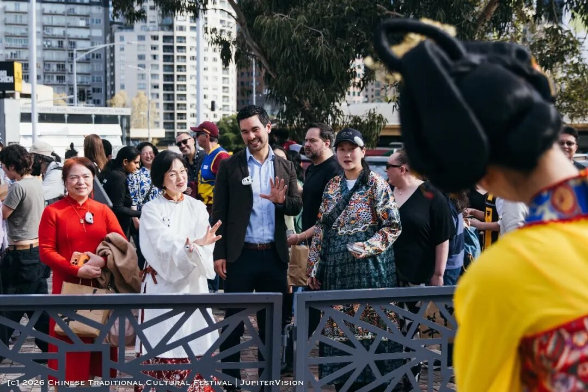
澳大利亚联邦众议员、Menzies选区议员Gabriel Ng MP来到展位，与HYSTON团队亲切交流，并了解团队在多元文化传播、青年参与及中澳体育文化合作方面的计划。
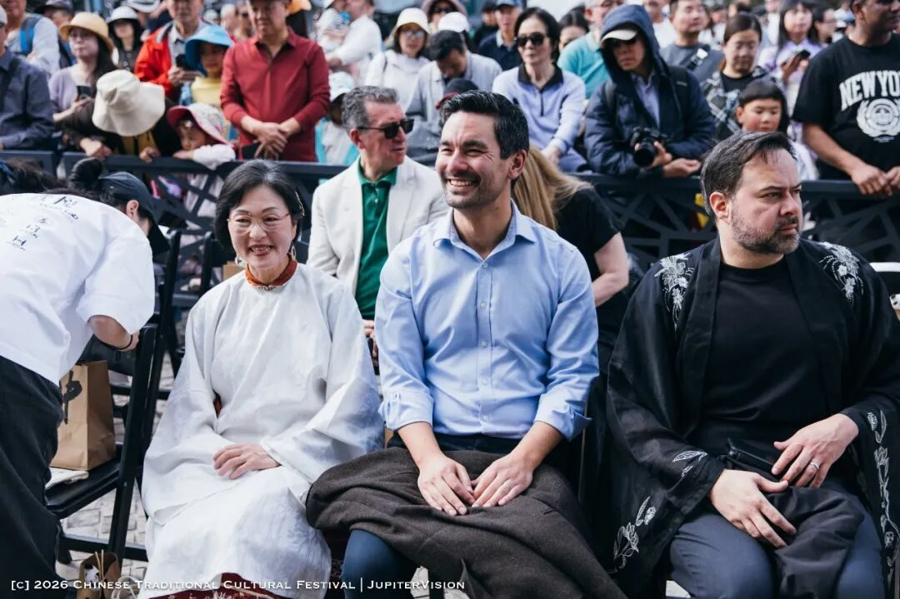
维多利亚州议员John Mullahy MP及墨尔本市议员Gladys Liu亦与团队就多元文化社区参与、青年交流及城市文化活动进行了沟通。
Gladys Liu长期关注多元文化社区、女性及家庭发展。此次在联邦广场与川渝文化展位团队见面，也为未来围绕城市文化、女性力量及社区参与展开更持续的交流留下了空间。
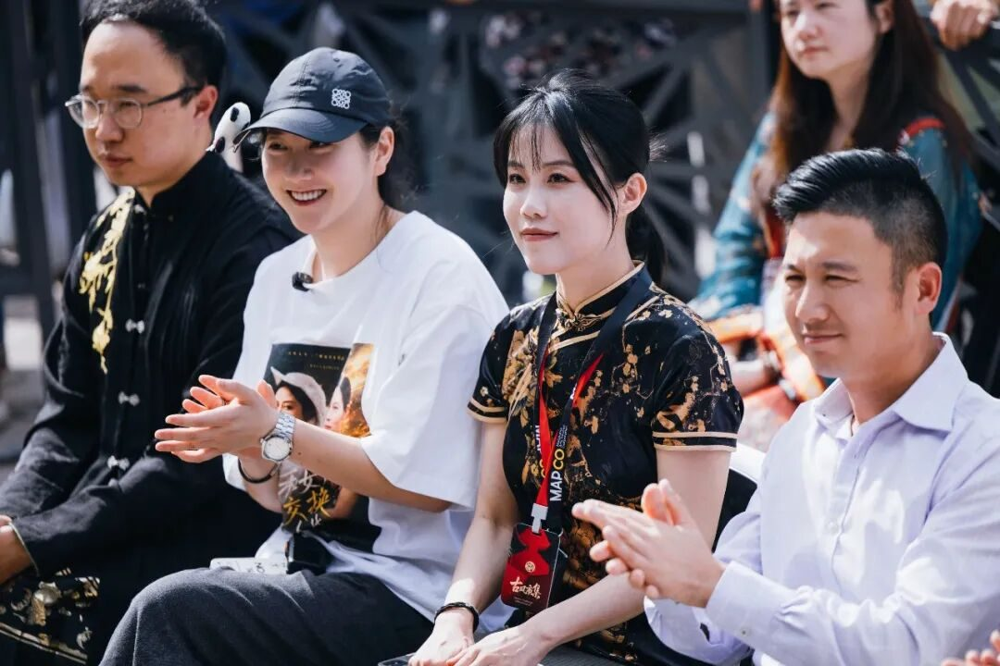
对于HYSTON而言，每一次展位上的对话，都是一次项目需求、公共资源与青年创意之间的重新连接。政府与议会嘉宾的到访，也让川渝文化展位从一个单向展示区域，转化为中澳政府、城市社区、文化机构与青年团队共同参与的交流现场。
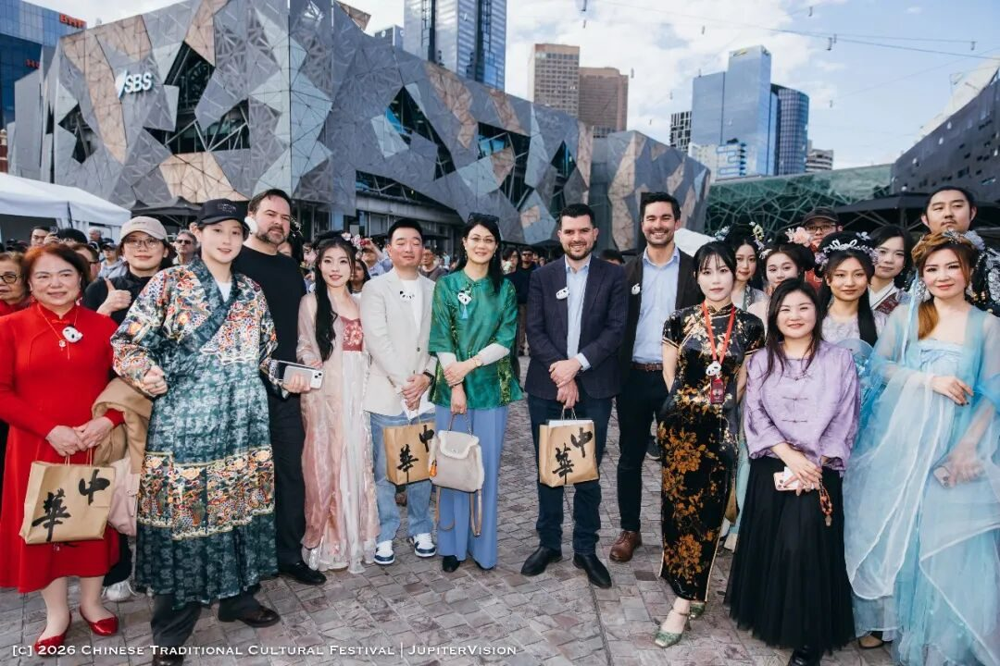
黄欣悦会长与中国驻墨尔本副总领事刘东源、澳大利亚联邦众议员及Menzies选区议员Gabriel Ng MP、墨尔本市议员Rafael Camillo、维多利亚州议员John Mullahy MP合影
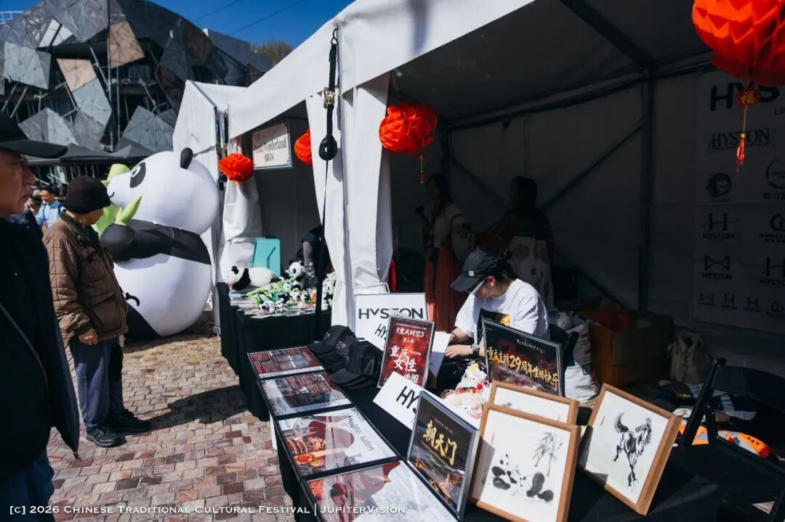
嘉宾的到访，让川渝展位不再只是一个静态的展示空间，而成为政府、议会、社区与青年团队彼此认识、交换想法的现场。
一支年轻团队，正在建立属于自己的国际表达
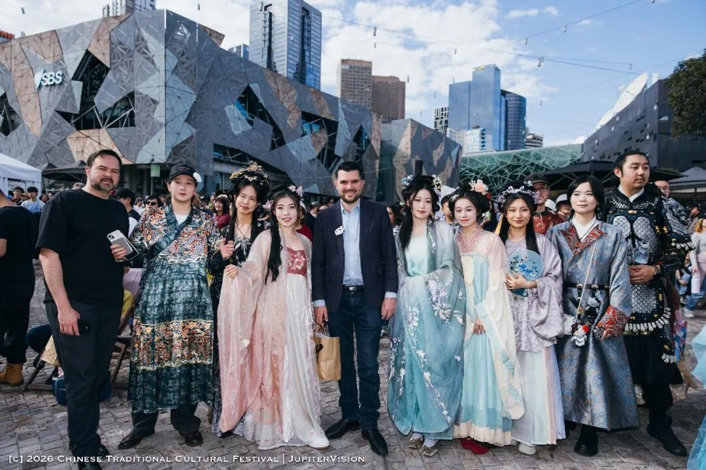
黄欣悦会长与联邦众议员 Gabriel Ng MP、墨尔本市议员Rafael Camillo合影
在本次活动中，HYSTON团队承担了展位内容策划、现场呈现、嘉宾接待、影像记录及传播等工作。
作为一支以年轻女性为主体、横跨文化、体育、媒体、人工智能及跨境合作领域的团队，HYSTON并未将“文化输出”理解为简单复制传统符号，而是尝试寻找一种属于当代川渝青年的国际表达方式。
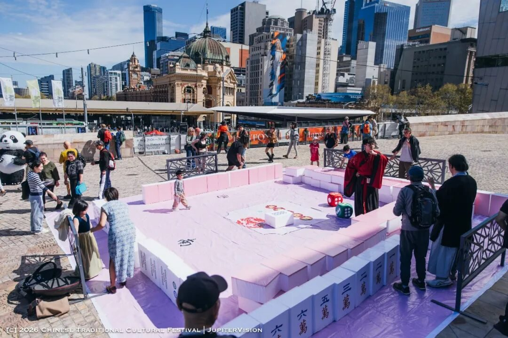
这种表达可以是一件衣服、一段城市影像、一场音乐演出，也可以是展位前真实发生的一次谈话。
当不同的人在同一件文化符号前停下来，当一位澳大利亚议员开始询问重庆，当一个从未去过中国的本地观众因为一只熊猫、一件服饰或一段影像产生兴趣，文化交流便不再只是宏大的概念，而成为了可以被看见的具体瞬间。
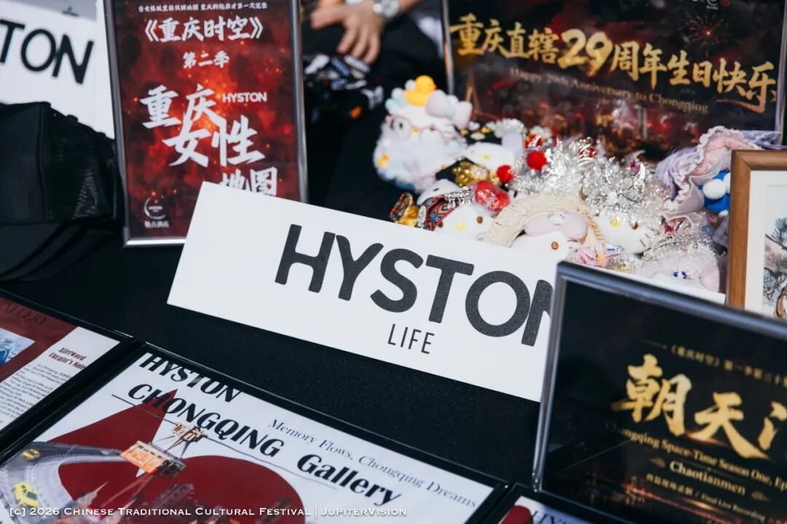
澳洲重庆市文化体育教育旅游协会会长、HYSTON创始人黄欣悦表示，团队希望通过联邦广场这样的城市公共空间，让川渝文化进入更广泛的澳大利亚本地视野。
她表示，
“文化真正的意义，不只是把一个地方展示出来，而是让原本不认识的人，因为它走到一起。我们希望川渝文化在澳大利亚被看见，也希望每一次见面都不只停留在合影，而能继续走向青年交流、城市合作和可以真正落地的项目。”
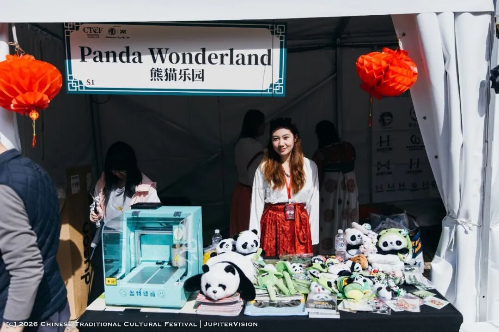
近年来，协会与HYSTON持续以墨尔本和重庆为双向落点，推动文化、体育、教育、旅游及青年领域的交流。从重庆城市影像放映、社区文化活动，到中澳体育合作及川渝文化推广，团队正在把分散的相遇逐步转化为可以持续生长的合作网络。
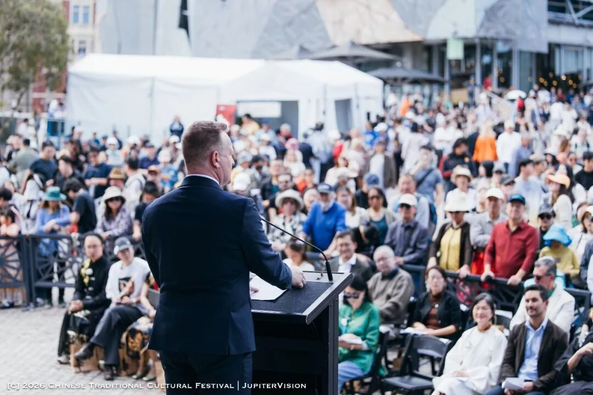
当川渝文化来到墨尔本联邦广场，它连接的不只是一个展位与一座城市。
未来，团队将继续以墨尔本和重庆为双向落点，围绕城市文化传播、青年与高校交流、中澳体育合作、女性公益、文旅推广及企业跨境连接，推动更多可以持续发展、真正落地的合作项目。
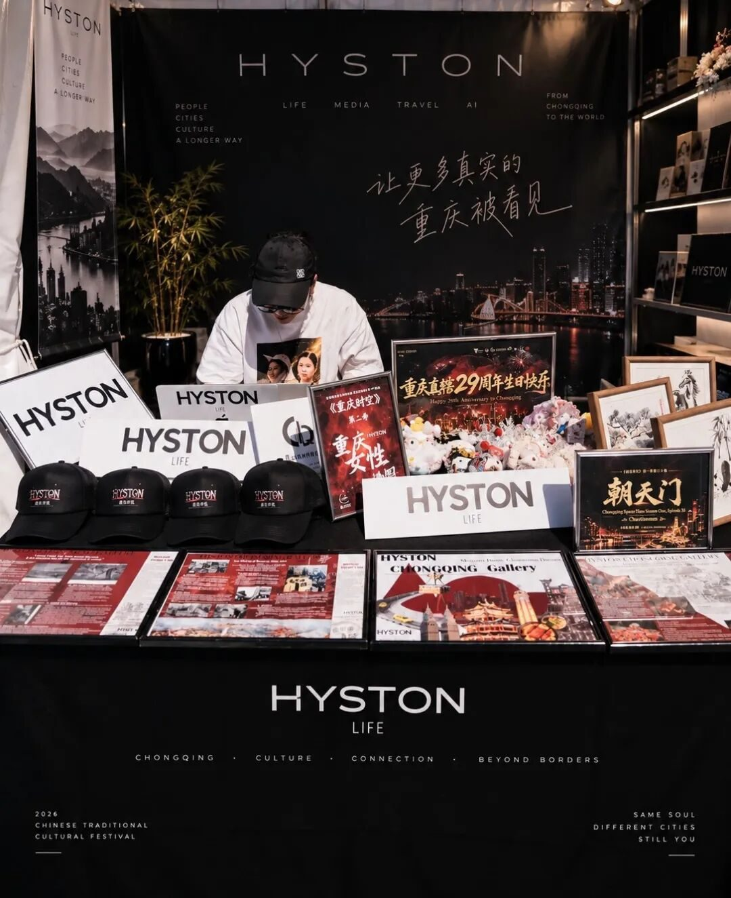
它让更多人从一只熊猫、一件服饰、一张影像开始，看见川渝，也让重庆与墨尔本之间新的故事，从一次见面继续发生。
联邦广场是墨尔本最具代表性的城市文化地标和公共活动空间之一，位于墨尔本中央商务区核心区域，与弗林德斯街火车站相对，汇聚澳大利亚影像中心（ACMI）、维多利亚国家美术馆伊恩·波特中心等重要文化机构。作为墨尔本举办大型公共庆典、国际文化活动及社区交流项目的重要场所，联邦广场长期承担着城市文化展示与多元社区连接的重要功能。
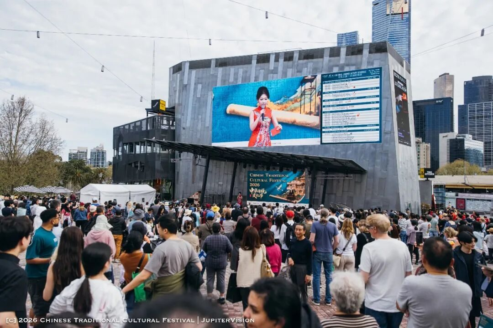
本次中国传统文化节在联邦广场举行，为中国传统文化进入墨尔本核心公共文化空间提供了重要平台。川渝文化展位通过城市影像、地域文化符号、青年创意及互动展示等形式，向澳大利亚政府代表、社会各界嘉宾及不同文化背景的公众呈现川渝地区的城市特色与当代表达，进一步扩大川渝文化在澳大利亚主流公共空间中的传播与影响，也为推动中澳地方文化交流、青年合作及多元社区互动创造了新的连接。
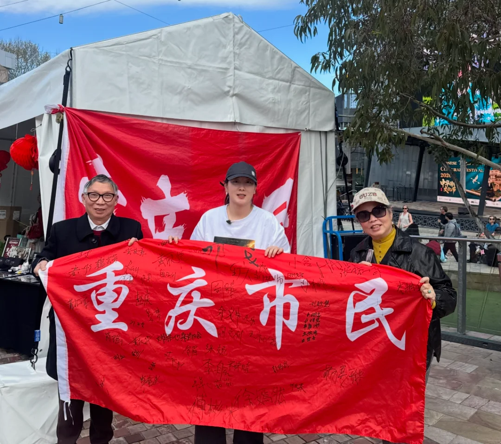
Sichuan–Chongqing Culture Showcased at Federation Square
On 19 September 2026, the Chinese Traditional Cultural Festival 2026 was held at Federation Square in the heart of Melbourne.
Featuring traditional music, dance, opera, cultural costumes, community stalls and interactive experiences, the festival created an open public space where people from different cultural backgrounds could encounter and engage with Chinese culture.
Government, parliamentary and community guests included the Hon Paul Edbrooke MP, Victorian Minister for Multicultural Affairs; Lord Mayor of Melbourne Nicholas Reece; Deputy Consul-General of the People’s Republic of China in Melbourne Liu Dongyuan; Gabriel Ng MP, Federal Member for Menzies; City of Melbourne Councillor Gladys Liu; and John Mullahy MP, State Member for Glen Waverley.
Bringing Sichuan and Chongqing into Melbourne’s civic heart
Presented by the Chongqing Cultural, Sports, Education and Tourism Association of Australia together with HYSTON, the Sichuan–Chongqing cultural booth brought regional culture into one of Melbourne’s most visible public spaces.
Through panda imagery, Bayu-inspired clothing, Chongqing city stories, visual media and youth-led creative projects, the booth introduced visitors to the culture and contemporary identity of Sichuan and Chongqing in an accessible and engaging way.
Visitors from different communities stopped to explore the display, take photographs and speak with the team, turning the booth into more than a cultural showcase—it became a meeting point between cities, communities and people.
Government and community guests visit the booth
Following the Opening Ceremony, Gabriel Ng MP, Federal Member for Menzies, and City of Melbourne Councillor Gladys Liu were among the guests who visited the Sichuan–Chongqing booth.
They met with representatives from the Association and HYSTON, learned about the team’s work across culture, sport, education and youth engagement, and joined performers, volunteers and young participants for photographs.
Their visit transformed the booth from a static display into a space for genuine conversation—connecting government, parliament, community organisations and a new generation of cross-cultural practitioners.
Hyston Huang, President of the Chongqing Cultural, Sports, Education and Tourism Association of Australia and Founder of HYSTON, said:
“The meaning of culture is not simply to display where we come from. It is to bring together people who may never otherwise have met. We want Sichuan and Chongqing to be seen in Australia, but more importantly, we want each encounter to develop into youth exchange, city-to-city connection and projects that can genuinely be delivered.”
With Melbourne and Chongqing as its two principal bases, the Association and HYSTON continue to develop initiatives across culture, sport, education, tourism and youth exchange.
When Sichuan–Chongqing culture arrived at Federation Square, it connected more than a booth and a city.
It allowed new audiences to encounter the region through an image, a costume and a conversation—and opened another point of connection between Chongqing and Melbourne.